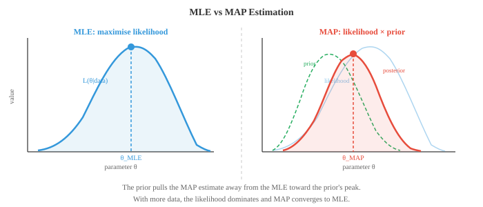

Bayesian Methods and Sequential Models¶
Bayesian methods combine prior beliefs with observed data to produce posterior distributions over model parameters. This file covers maximum likelihood estimation, MAP estimation, conjugate priors, Bayesian inference, hidden Markov models, and the EM algorithm, techniques behind spam filters, language models, and uncertainty-aware ML.
-
So far we have described distributions and how to compute probabilities. Now we tackle the question at the heart of ML: given observed data, how do we find the best parameters for our model?
-
Maximum Likelihood Estimation (MLE) answers this directly. Pick the parameter values that make the observed data most probable.
-
Formally, given data \(D = \{x_1, x_2, \ldots, x_n\}\) and a model with parameter \(\theta\), the likelihood function is:
- The product assumes the data points are independent and identically distributed (i.i.d.). The MLE estimate is:
- In practice we maximise the log-likelihood instead, because the log turns products into sums and prevents numerical underflow:
-
Since \(\log\) is monotonically increasing, the \(\theta\) that maximises \(\ell(\theta)\) also maximises \(L(\theta)\).
-
Coin toss example: you flip a coin 10 times and get 7 heads. What is the MLE estimate of the coin's bias \(p\) (probability of heads)?
-
Each flip is Bernoulli(\(p\)), so the likelihood of 7 heads in 10 flips is:
-
Taking the log and differentiating: \(\frac{d\ell}{dp} = \frac{7}{p} - \frac{3}{1-p} = 0\), which gives \(\hat{p}_{\text{MLE}} = 7/10 = 0.7\).
-
MLE is intuitive and simple. If you got 7 heads in 10 flips, the most likely bias is 0.7. But notice the problem: if you got 10 heads in 10 flips, MLE says \(\hat{p} = 1\), meaning the coin will always land heads. That seems overconfident given only 10 observations.
-
Maximum A Posteriori (MAP) estimation fixes this by adding prior beliefs. Instead of maximising just the likelihood, MAP maximises the posterior:
-
We dropped \(P(D)\) from the denominator because it does not depend on \(\theta\) and does not affect the argmax.
-
The prior \(P(\theta)\) encodes what we believed about \(\theta\) before seeing data. If we use a Beta(2, 2) prior for our coin bias (expressing a mild belief that the coin is roughly fair), the MAP estimate is no longer simply the proportion of heads. It gets pulled toward 0.5.

- With a Beta(\(\alpha\), \(\beta\)) prior and observing \(h\) heads and \(t\) tails, the posterior is Beta(\(\alpha + h\), \(\beta + t\)), and the MAP estimate is:
-
For our example with Beta(2,2) prior, 7 heads, 3 tails: \(\hat{p}_{\text{MAP}} = \frac{2 + 7 - 1}{2 + 2 + 10 - 2} = \frac{8}{12} = 0.667\).
-
Notice how the MAP estimate (0.667) is pulled toward 0.5 compared to the MLE (0.7). The prior acts as regularisation. In ML, L2 regularisation (weight decay) is exactly equivalent to MAP estimation with a Gaussian prior on the weights.
-
Full Bayesian inference goes further than MAP. Instead of finding a single best \(\theta\), it maintains the entire posterior distribution \(P(\theta | D)\). This gives you not just a point estimate but a measure of uncertainty.
-
For the biased coin with Beta(2,2) prior and 7 heads, 3 tails, the full posterior is Beta(9, 5). The mean of this distribution is \(9/14 \approx 0.643\), and its spread tells us how confident we are. With more data, the posterior narrows.
-
The three approaches form a spectrum:
- MLE: no prior, just data. Fast, but can overfit with little data.
- MAP: point estimate with prior regularisation. Adds robustness.
- Full Bayesian: entire posterior distribution. Most informative, but often computationally expensive.
-
Markov chains model sequences where the next state depends only on the current state, not on the history. This "memorylessness" is called the Markov property:
-
Think of weather. Tomorrow's weather depends on today's weather, but not on last week's (a simplification, but surprisingly useful).
-
A Markov chain has a finite set of states and a transition matrix \(T\) where entry \(T_{ij}\) gives the probability of moving from state \(i\) to state \(j\). Each row sums to 1.

- For the weather example above, the transition matrix is:
-
If today is rainy (state vector \(\mathbf{s}_0 = [1, 0, 0]\)), the probability distribution over tomorrow's weather is \(\mathbf{s}_1 = \mathbf{s}_0 T = [0.3, 0.4, 0.3]\). Two days from now: \(\mathbf{s}_2 = \mathbf{s}_0 T^2\). This uses matrix multiplication from Chapter 1.
-
Many Markov chains converge to a stationary distribution \(\pi\) such that \(\pi T = \pi\). No matter where you start, after enough steps the chain settles into \(\pi\). This property is the foundation of MCMC (Markov Chain Monte Carlo), a widely used sampling technique in Bayesian ML.
-
Hidden Markov Models (HMMs) extend Markov chains by adding a layer of indirection. The true states are hidden (unobserved), and at each time step the hidden state emits an observable signal.

-
An HMM has three components:
- Transition probabilities \(P(z_t | z_{t-1})\): how hidden states evolve (the Markov chain)
- Emission probabilities \(P(x_t | z_t)\): what each hidden state produces as observable output
- Initial distribution \(P(z_1)\): the starting hidden state probabilities
-
Umbrella example: suppose you cannot see the weather directly but you can observe whether your friend carries an umbrella. The hidden states are {Rainy, Sunny} and the observation is {Umbrella, No umbrella}.
-
Transition probabilities: \(P(\text{Rainy}|\text{Rainy}) = 0.7\), \(P(\text{Sunny}|\text{Rainy}) = 0.3\), \(P(\text{Rainy}|\text{Sunny}) = 0.4\), \(P(\text{Sunny}|\text{Sunny}) = 0.6\).
-
Emission probabilities: \(P(\text{Umbrella}|\text{Rainy}) = 0.9\), \(P(\text{No umbrella}|\text{Rainy}) = 0.1\), \(P(\text{Umbrella}|\text{Sunny}) = 0.2\), \(P(\text{No umbrella}|\text{Sunny}) = 0.8\).
-
The key questions for HMMs are:
- Decoding: given observations, what is the most likely sequence of hidden states? Solved by the Viterbi algorithm.
- Evaluation: what is the probability of an observation sequence? Solved by the Forward algorithm.
- Learning: given observations, what are the best model parameters? Solved by the Baum-Welch algorithm (an instance of Expectation-Maximisation).
-
Viterbi walkthrough: suppose you observe [Umbrella, Umbrella, No umbrella] and want to find the most likely weather sequence.
-
Start with initial probabilities. Assume \(P(R) = 0.5\), \(P(S) = 0.5\).
-
Day 1 (observe Umbrella):
- \(V_1(R) = P(R) \cdot P(U|R) = 0.5 \times 0.9 = 0.45\)
- \(V_1(S) = P(S) \cdot P(U|S) = 0.5 \times 0.2 = 0.10\)
-
Day 2 (observe Umbrella):
- \(V_2(R) = \max(V_1(R) \cdot P(R|R), V_1(S) \cdot P(R|S)) \cdot P(U|R)\)
- \(= \max(0.45 \times 0.7, 0.10 \times 0.4) \times 0.9 = \max(0.315, 0.04) \times 0.9 = 0.2835\)
- \(V_2(S) = \max(V_1(R) \cdot P(S|R), V_1(S) \cdot P(S|S)) \cdot P(U|S)\)
- \(= \max(0.45 \times 0.3, 0.10 \times 0.6) \times 0.2 = \max(0.135, 0.06) \times 0.2 = 0.027\)
-
Day 3 (observe No umbrella):
- \(V_3(R) = \max(0.2835 \times 0.7, 0.027 \times 0.4) \times 0.1 = 0.1985 \times 0.1 = 0.01985\)
- \(V_3(S) = \max(0.2835 \times 0.3, 0.027 \times 0.6) \times 0.8 = 0.08505 \times 0.8 = 0.06804\)
-
Day 3's maximum is at Sunny. Backtracking: Day 3 = Sunny (from R), Day 2 = Rainy (from R), Day 1 = Rainy. Most likely sequence: Rainy, Rainy, Sunny.
-
The Forward-Backward algorithm computes the probability of being in each hidden state at each time step, given the entire observation sequence. The forward pass computes \(P(z_t, x_{1:t})\) and the backward pass computes \(P(x_{t+1:T} | z_t)\). Multiplying these gives the smoothed state probabilities.
-
The Baum-Welch algorithm learns HMM parameters from data when the hidden states are unobserved. It is an Expectation-Maximisation (EM) algorithm: the E-step uses forward-backward to estimate which hidden states generated the observations, and the M-step updates the transition and emission probabilities.
-
HMMs were historically dominant in speech recognition (hidden phoneme states emit acoustic signals) and bioinformatics (hidden gene states emit DNA base pairs). While deep learning has largely superseded HMMs in these fields, the ideas of hidden states, emissions, and sequential inference remain central to sequence models.
-
Conditional Random Fields (CRFs) improve on HMMs by removing the independence assumption on emissions. In an HMM, the observation at time \(t\) depends only on the hidden state at time \(t\). CRFs allow the label at position \(t\) to depend on the entire input sequence.
-
A linear-chain CRF models the conditional probability of a label sequence \(\mathbf{y}\) given an input sequence \(\mathbf{x}\):
-
Here \(f_k\) are feature functions (which can look at any part of the input), \(\lambda_k\) are learned weights, and \(Z(\mathbf{x})\) is a normalising constant.
-
CRFs are discriminative models (they model \(P(\mathbf{y}|\mathbf{x})\) directly) while HMMs are generative (they model \(P(\mathbf{x}, \mathbf{y})\)). This distinction is the same as logistic regression (discriminative) vs Naive Bayes (generative).
-
In modern NLP, CRF layers are often added on top of neural networks (BiLSTM-CRF, BERT-CRF) for tasks like named entity recognition and part-of-speech tagging, where capturing label dependencies is important.
Coding Tasks (use CoLab or notebook)¶
-
Implement MLE and MAP for a coin toss experiment. Observe how the MAP estimate changes with different priors and different amounts of data.
import jax.numpy as jnp import matplotlib.pyplot as plt # Data: observed coin flips heads, tails = 7, 3 # MLE p_mle = heads / (heads + tails) print(f"MLE: {p_mle:.4f}") # MAP with Beta prior for alpha, beta in [(1,1), (2,2), (5,5), (10,10)]: p_map = (alpha + heads - 1) / (alpha + beta + heads + tails - 2) print(f"MAP (Beta({alpha},{beta})): {p_map:.4f}") # Visualise posterior for Beta(2,2) prior theta = jnp.linspace(0.01, 0.99, 200) # Posterior is Beta(alpha+heads, beta+tails) a_post, b_post = 2 + heads, 2 + tails posterior = theta**(a_post-1) * (1-theta)**(b_post-1) posterior = posterior / jnp.trapezoid(posterior, theta) plt.figure(figsize=(8, 4)) plt.plot(theta, posterior, color="#e74c3c", linewidth=2, label=f"Posterior Beta({a_post},{b_post})") plt.axvline(p_mle, color="#3498db", linestyle="--", label=f"MLE = {p_mle:.2f}") plt.axvline((a_post-1)/(a_post+b_post-2), color="#e74c3c", linestyle="--", label=f"MAP = {(a_post-1)/(a_post+b_post-2):.3f}") plt.xlabel("θ (coin bias)") plt.ylabel("Density") plt.title("Posterior distribution after 7H, 3T with Beta(2,2) prior") plt.legend() plt.grid(alpha=0.3) plt.show() -
Build a Markov chain for the weather model and simulate it. Compute the stationary distribution both by simulation and by solving \(\pi T = \pi\).
import jax import jax.numpy as jnp # Transition matrix: R, S, C T = jnp.array([ [0.3, 0.4, 0.3], [0.2, 0.5, 0.3], [0.4, 0.3, 0.3] ]) states = ["Rainy", "Sunny", "Cloudy"] # Simulate 100,000 steps key = jax.random.PRNGKey(42) n_steps = 100_000 state = 0 # start rainy counts = jnp.zeros(3) for i in range(n_steps): key, subkey = jax.random.split(key) state = jax.random.choice(subkey, 3, p=T[state]) counts = counts.at[state].add(1) sim_stationary = counts / n_steps print("Simulated stationary distribution:") for s, p in zip(states, sim_stationary): print(f" {s}: {p:.4f}") # Analytical: find left eigenvector with eigenvalue 1 eigenvalues, eigenvectors = jnp.linalg.eig(T.T) idx = jnp.argmin(jnp.abs(eigenvalues - 1.0)) pi = jnp.real(eigenvectors[:, idx]) pi = pi / pi.sum() print("\nAnalytical stationary distribution:") for s, p in zip(states, pi): print(f" {s}: {p:.4f}") -
Implement the Viterbi algorithm for the umbrella HMM and decode a sequence of observations.
import jax.numpy as jnp # HMM parameters states = ["Rainy", "Sunny"] obs_names = ["Umbrella", "No umbrella"] trans = jnp.array([[0.7, 0.3], # R->R, R->S [0.4, 0.6]]) # S->R, S->S emit = jnp.array([[0.9, 0.1], # R->U, R->noU [0.2, 0.8]]) # S->U, S->noU init = jnp.array([0.5, 0.5]) # Observations: U=0, noU=1 observations = [0, 0, 1] # Umbrella, Umbrella, No umbrella def viterbi(obs, init, trans, emit): n_states = len(init) T = len(obs) V = jnp.zeros((T, n_states)) path = jnp.zeros((T, n_states), dtype=int) # Initialisation V = V.at[0].set(init * emit[:, obs[0]]) # Recursion for t in range(1, T): for j in range(n_states): probs = V[t-1] * trans[:, j] V = V.at[t, j].set(jnp.max(probs) * emit[j, obs[t]]) path = path.at[t, j].set(jnp.argmax(probs)) # Backtrack best = [int(jnp.argmax(V[-1]))] for t in range(T-1, 0, -1): best.insert(0, int(path[t, best[0]])) return best, V decoded, scores = viterbi(observations, init, trans, emit) print("Observations:", [obs_names[o] for o in observations]) print("Decoded: ", [states[s] for s in decoded]) -
Visualise how the posterior evolves as you observe more coin flips. Start with a Beta(1,1) prior (uniform) and update after each flip.
import jax import jax.numpy as jnp import matplotlib.pyplot as plt theta = jnp.linspace(0.01, 0.99, 300) key = jax.random.PRNGKey(7) # True bias = 0.65 flips = jax.random.bernoulli(key, p=0.65, shape=(50,)) plt.figure(figsize=(10, 5)) a, b = 1, 1 # Beta(1,1) = uniform for n_obs in [0, 1, 5, 10, 25, 50]: h = int(flips[:n_obs].sum()) t = n_obs - h a_post = a + h b_post = b + t y = theta**(a_post-1) * (1-theta)**(b_post-1) y = y / jnp.trapezoid(y, theta) plt.plot(theta, y, linewidth=2, label=f"n={n_obs} (h={h})") plt.axvline(0.65, color="black", linestyle=":", alpha=0.5, label="true p=0.65") plt.xlabel("θ") plt.ylabel("Density") plt.title("Bayesian updating: posterior narrows with more data") plt.legend() plt.grid(alpha=0.3) plt.show()